Plots of Rhat statistics, ratios of effective sample size to total sample size, and autocorrelation of MCMC draws. See the Plot Descriptions section, below, for details. For models fit using the No-U-Turn-Sampler, see also MCMC-nuts for additional MCMC diagnostic plots.
Usage
mcmc_rhat(rhat, ..., size = NULL)
mcmc_rhat_hist(rhat, ..., binwidth = NULL, bins = NULL, breaks = NULL)
mcmc_rhat_data(rhat, ...)
mcmc_neff(ratio, ..., size = NULL)
mcmc_neff_hist(ratio, ..., binwidth = NULL, bins = NULL, breaks = NULL)
mcmc_neff_data(ratio, ...)
mcmc_acf(
x,
pars = character(),
regex_pars = character(),
...,
facet_args = list(),
lags = 20,
size = NULL
)
mcmc_acf_bar(
x,
pars = character(),
regex_pars = character(),
...,
facet_args = list(),
lags = 20
)Arguments
- rhat
A vector of R-hat estimates.
- ...
Currently ignored.
- size
Optional values to override
ggplot2::geom_point()'s default size (formcmc_rhat(),mcmc_neff()) orggplot2::geom_line()'s default line width (formcmc_acf()).- binwidth
Passed to
ggplot2::geom_histogram()to override the default binwidth.- bins
Passed to
ggplot2::geom_histogram()to override the default binwidth.- breaks
Passed to
ggplot2::geom_histogram()as an alternative tobinwidth.- ratio
A vector of ratios of effective sample size estimates to total sample size. See
neff_ratio().- x
An object containing MCMC draws:
A 3-D array, matrix, list of matrices, or data frame. The MCMC-overview page provides details on how to specify each these.
A
drawsobject from the posterior package (e.g.,draws_array,draws_rvars, etc.).An object with an
as.array()method that returns the same kind of 3-D array described on the MCMC-overview page.
- pars
An optional character vector of parameter names. If neither
parsnorregex_parsis specified then the default is to use all parameters. As of version1.7.0, bayesplot also supports 'tidy' parameter selection by specifyingpars = vars(...), where...is specified the same way as in dplyr::select(...) and similar functions. Examples of usingparsin this way can be found on the Tidy parameter selection page.- regex_pars
An optional regular expression to use for parameter selection. Can be specified instead of
parsor in addition topars. When usingparsfor tidy parameter selection, theregex_parsargument is ignored since select helpers perform a similar function.- facet_args
A named list of arguments (other than
facets) passed toggplot2::facet_wrap()orggplot2::facet_grid()to control faceting. Note: ifscalesis not included infacet_argsthen bayesplot may usescales="free"as the default (depending on the plot) instead of the ggplot2 default ofscales="fixed".- lags
The number of lags to show in the autocorrelation plot.
Value
The plotting functions return a ggplot object that can be further
customized using the ggplot2 package. The functions with suffix
_data() return the data that would have been drawn by the plotting
function.
Plot Descriptions
mcmc_rhat(),mcmc_rhat_hist()Rhat values as either points or a histogram. Values are colored using different shades (lighter is better). The chosen thresholds are somewhat arbitrary, but can be useful guidelines in practice.
light: below 1.05 (good)
mid: between 1.05 and 1.1 (ok)
dark: above 1.1 (too high)
mcmc_neff(),mcmc_neff_hist()Ratios of effective sample size to total sample size as either points or a histogram. Values are colored using different shades (lighter is better). The chosen thresholds are somewhat arbitrary, but can be useful guidelines in practice.
light: between 0.5 and 1 (high)
mid: between 0.1 and 0.5 (good)
dark: below 0.1 (low)
mcmc_acf(),mcmc_acf_bar()Grid of autocorrelation plots by chain and parameter. The
lagsargument gives the maximum number of lags at which to calculate the autocorrelation function.mcmc_acf()is a line plot whereasmcmc_acf_bar()is a barplot.
References
Stan Development Team. Stan Modeling Language Users Guide and Reference Manual. https://mc-stan.org/users/documentation/
Gelman, A. and Rubin, D. B. (1992). Inference from iterative simulation using multiple sequences. Statistical Science. 7(4), 457–472.
See also
The Visual MCMC Diagnostics vignette.
MCMC-nuts for additional MCMC diagnostic plots for models fit using the No-U-Turn-Sampler.
Other MCMC:
MCMC-combos,
MCMC-distributions,
MCMC-intervals,
MCMC-nuts,
MCMC-overview,
MCMC-parcoord,
MCMC-recover,
MCMC-scatterplots,
MCMC-traces
Examples
# autocorrelation
x <- example_mcmc_draws()
dim(x)
#> [1] 250 4 4
dimnames(x)
#> $Iteration
#> NULL
#>
#> $Chain
#> [1] "chain:1" "chain:2" "chain:3" "chain:4"
#>
#> $Parameter
#> [1] "alpha" "sigma" "beta[1]" "beta[2]"
#>
color_scheme_set("green")
mcmc_acf(x, pars = c("alpha", "beta[1]"))
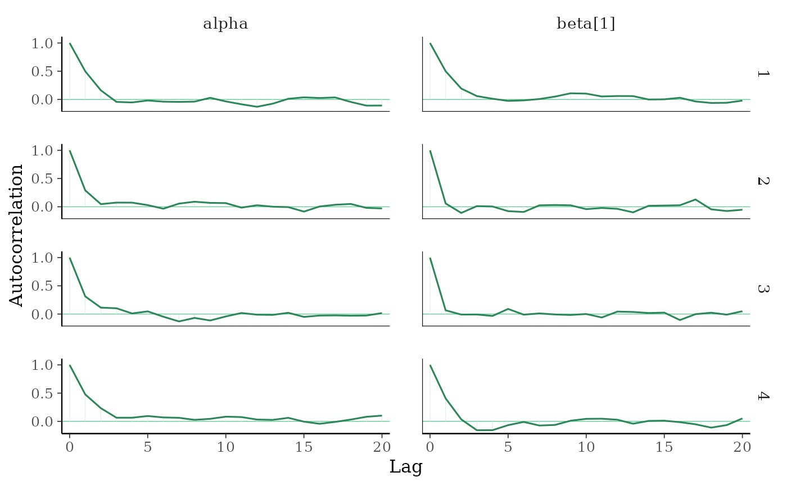
# \donttest{
color_scheme_set("pink")
(p <- mcmc_acf_bar(x, pars = c("alpha", "beta[1]")))
# add horiztonal dashed line at 0.5
p + hline_at(0.5, linetype = 2, size = 0.15, color = "gray")
#> Warning: Using `size` aesthetic for lines was deprecated in ggplot2 3.4.0.
#> ℹ Please use `linewidth` instead.
#> ℹ The deprecated feature was likely used in the bayesplot package.
#> Please report the issue at <https://github.com/stan-dev/bayesplot/issues/>.
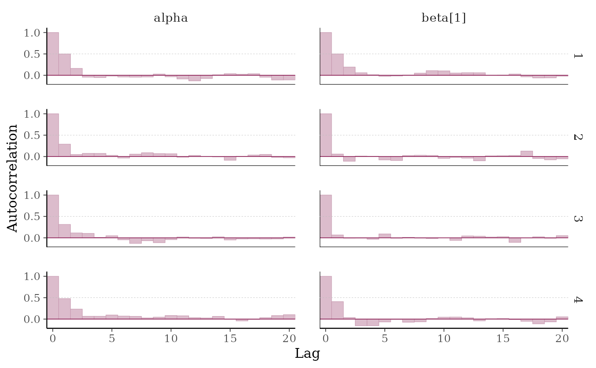
# }
# fake rhat values to use for demonstration
rhat <- c(runif(100, 1, 1.15))
mcmc_rhat_hist(rhat)
#> `stat_bin()` using `bins = 30`. Pick better value `binwidth`.
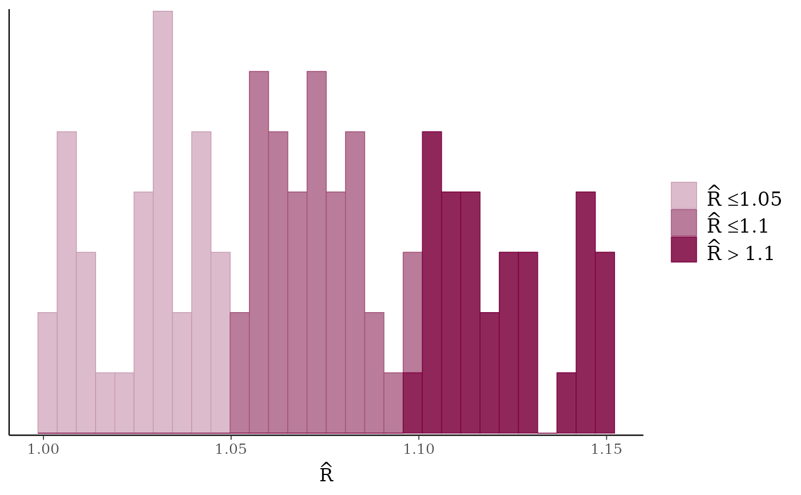
mcmc_rhat(rhat)
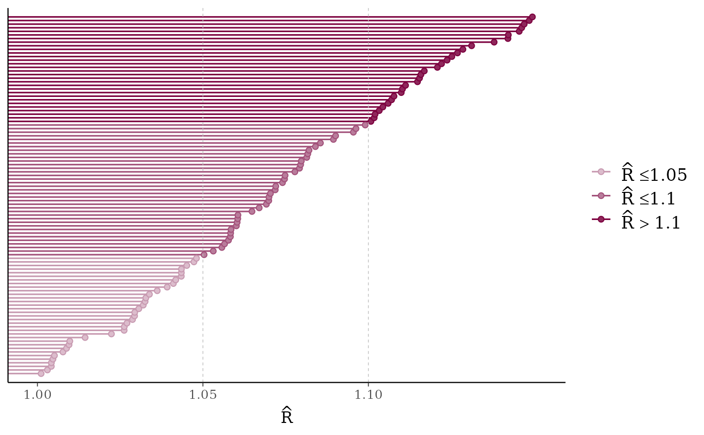
# lollipops
color_scheme_set("purple")
mcmc_rhat(rhat[1:10], size = 5)
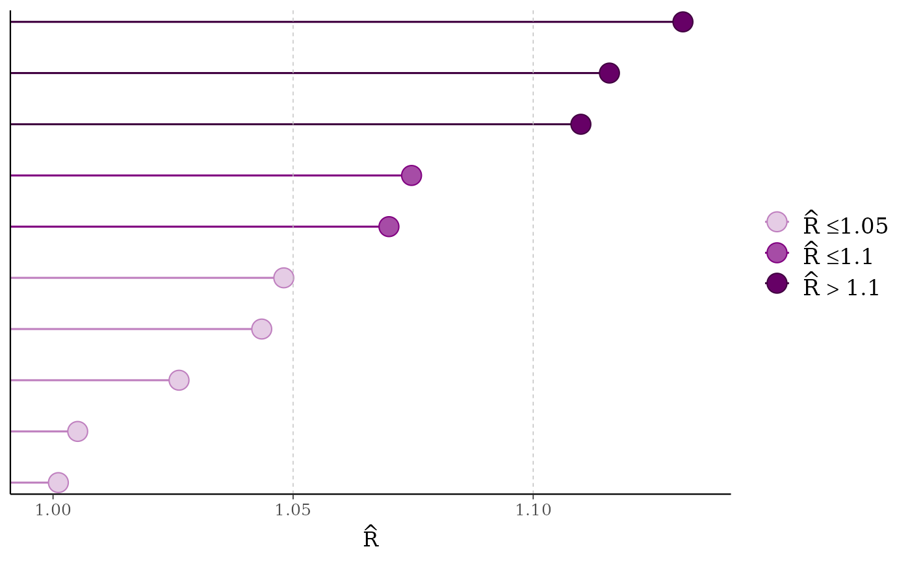
color_scheme_set("blue")
mcmc_rhat(runif(1000, 1, 1.07))
mcmc_rhat(runif(1000, 1, 1.3)) + legend_move("top") # add legend above plot
# fake neff ratio values to use for demonstration
ratio <- c(runif(100, 0, 1))
mcmc_neff_hist(ratio)
#> `stat_bin()` using `bins = 30`. Pick better value `binwidth`.
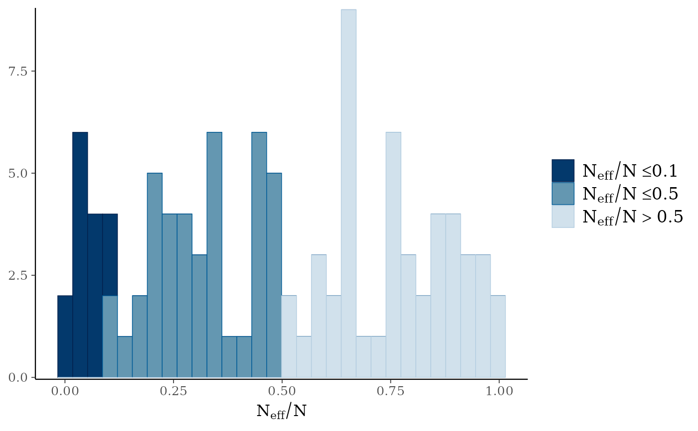
mcmc_neff(ratio)
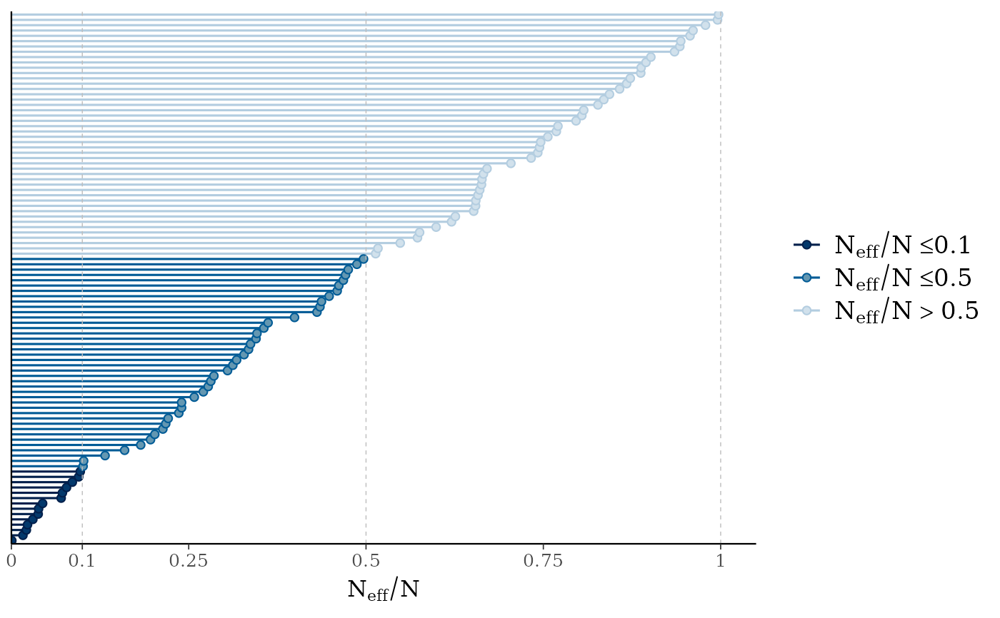
# \dontrun{
# Example using rstanarm model (requires rstanarm package)
library(rstanarm)
#> Loading required package: Rcpp
#> This is rstanarm version 2.32.2
#> - See https://mc-stan.org/rstanarm/articles/priors for changes to default priors!
#> - Default priors may change, so it's safest to specify priors, even if equivalent to the defaults.
#> - For execution on a local, multicore CPU with excess RAM we recommend calling
#> options(mc.cores = parallel::detectCores())
# intentionally use small 'iter' so there are some
# problems with rhat and neff for demonstration
fit <- stan_glm(mpg ~ ., data = mtcars, iter = 50, refresh = 0)
#> Warning: The largest R-hat is 1.11, indicating chains have not mixed.
#> Running the chains for more iterations may help. See
#> https://mc-stan.org/misc/warnings.html#r-hat
#> Warning: Bulk Effective Samples Size (ESS) is too low, indicating posterior means and medians may be unreliable.
#> Running the chains for more iterations may help. See
#> https://mc-stan.org/misc/warnings.html#bulk-ess
#> Warning: Tail Effective Samples Size (ESS) is too low, indicating posterior variances and tail quantiles may be unreliable.
#> Running the chains for more iterations may help. See
#> https://mc-stan.org/misc/warnings.html#tail-ess
rhats <- rhat(fit)
ratios <- neff_ratio(fit)
mcmc_rhat(rhats)
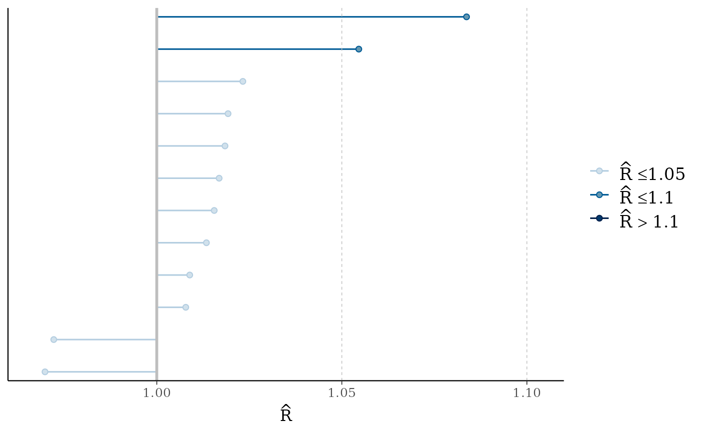
mcmc_neff(ratios, size = 3)
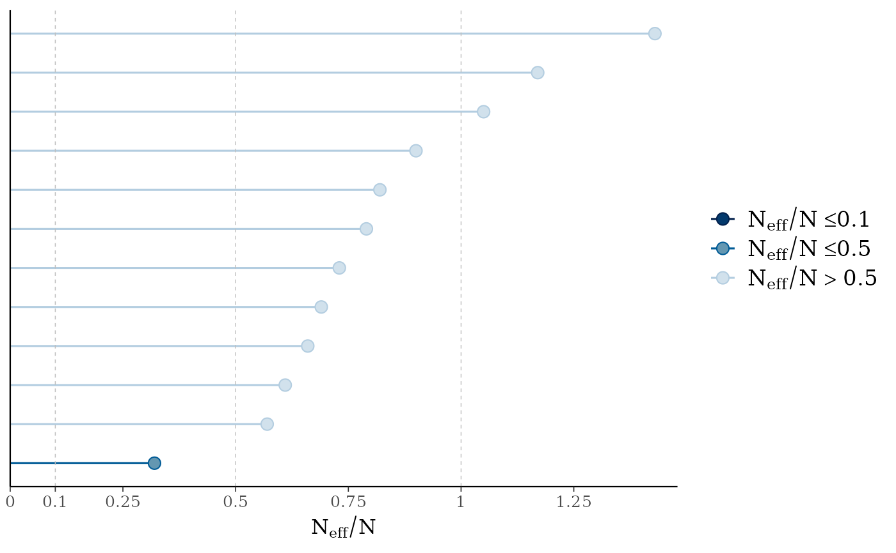
# there's a small enough number of parameters in the
# model that we can display their names on the y-axis
mcmc_neff(ratios) + yaxis_text(hjust = 1)
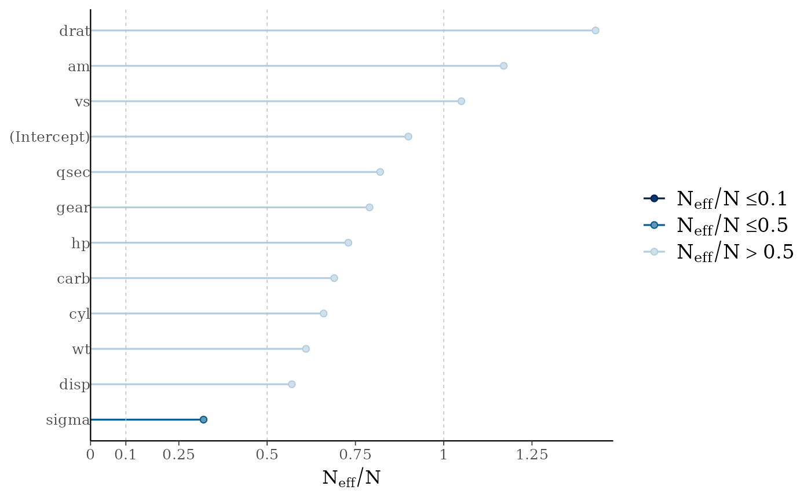
# can also look at autocorrelation
draws <- as.array(fit)
mcmc_acf(draws, pars = c("wt", "cyl"), lags = 10)
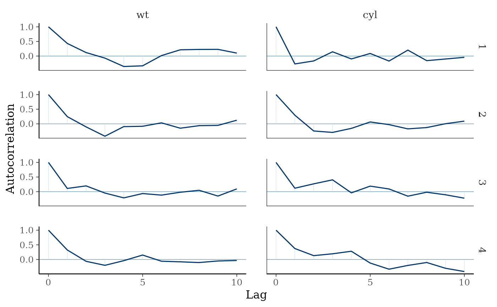
# increase number of iterations and plots look much better
fit2 <- update(fit, iter = 500)
#> Warning: Bulk Effective Samples Size (ESS) is too low, indicating posterior means and medians may be unreliable.
#> Running the chains for more iterations may help. See
#> https://mc-stan.org/misc/warnings.html#bulk-ess
mcmc_rhat(rhat(fit2))
mcmc_neff(neff_ratio(fit2))
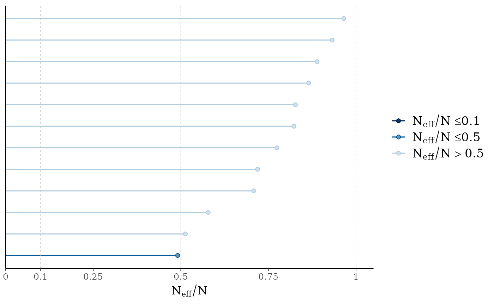
mcmc_acf(as.array(fit2), pars = c("wt", "cyl"), lags = 10)
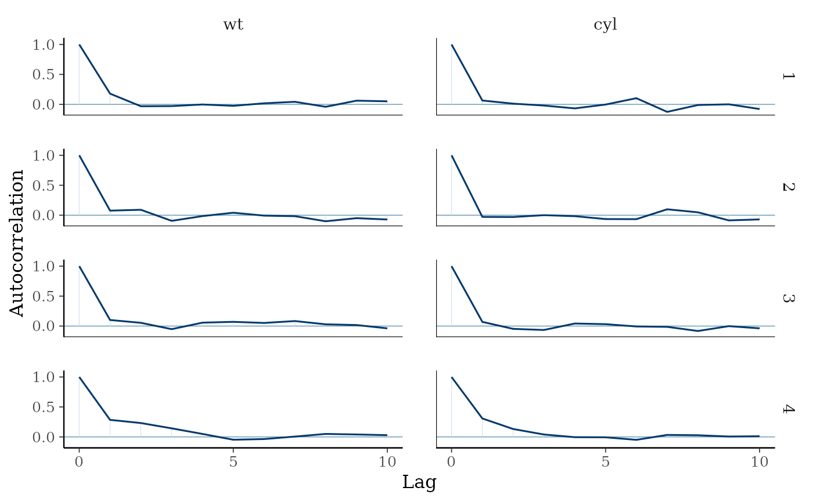
# }